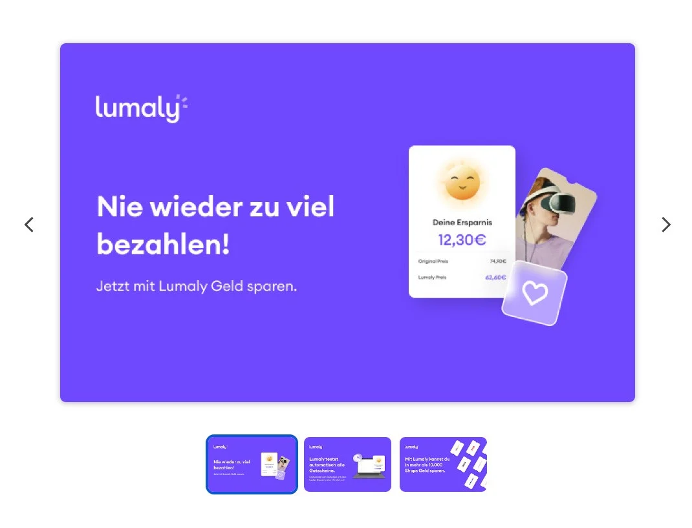

Lumaly
Lumaly is a cashback and coupon browser extension ecosystem with extension APIs, site APIs, admin operations, shops, coupons, redirects, reporting, queues, and monitoring.

- PHP 8.1
- Laravel
- MySQL/MariaDB
- Redis
- Horizon
- Sanctum
- Passport
- Swagger
- Prometheus
- AWS S3
My role
Senior backend developer working on backend, API, admin, integration, and product systems.
Highlights
Extension API · Site API · Admin API · Affiliate integrations · Gift-card flows · Offerwall conversions · Queues · Scheduled imports · Prometheus metrics · Swagger docs
Why it matters
Production backend for an integration-heavy extension ecosystem: APIs, imports, queues, offer logic, metrics, admin operations, and reliability under real usage.